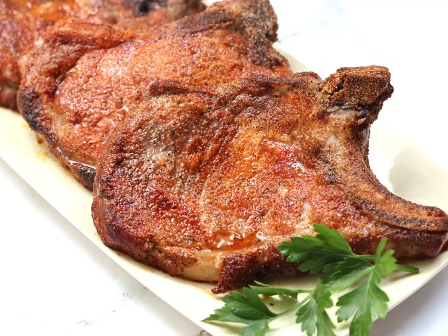

Pork Rub Rubbed and Baked Pork Chops

Description
- Prep Time: 5 mins
- Cook Time: 20mins
- Total Time: 25 mins
- Servings: 6
Ingredient
- 2 tablespoons paprika
- 2 tablespoons white sugar
- 1 tablespoon salt
- 1 tablespoon ground black pepper
- 1 tablespoon garlic powder
- 1 tablespoon onion powder
- 2 teaspoons cayenne pepper
- 6 pork chops
Steps
- Gather the ingredients. Preheat the oven to 450 degrees F (230 degrees C).
- Mix paprika, sugar, salt, pepper, garlic powder, onion powder, and cayenne pepper together in a wide, shallow bowl.
- Dredge pork chops in the spice mixture to coat and arrange on a baking sheet.
- Bake chops in preheated oven until no longer pink in the center, about 20 minutes. An instant-read thermometer inserted into the center should read 145 degrees F (63 degrees C).
Home